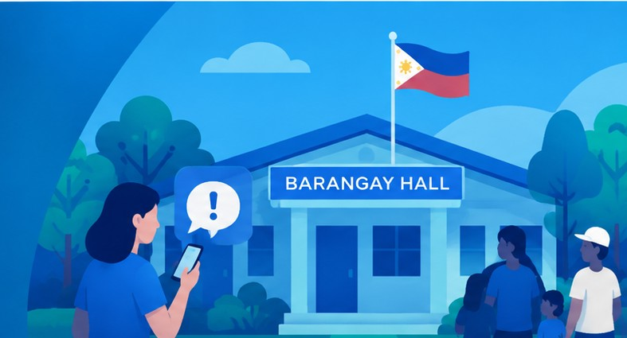

Share your concerns
Speak up about local issues.
WELCOME TO BARANGAY CONNECT
Your voice matters in building a better community. Share concerns, follow updates, and connect with your barangay in one simple, accessible place.
Stronger communities start here.
Every concern deserves to be heard.

Speak up about local issues.
See the status of your reports.
Keep up with barangay news.
Barangay Connect brings residents and local administrators closer together. It provides a central space to raise concerns, read announcements, and take part in conversations that matter to the neighborhood.
Be part of the conversation →Share an issue with the details needed to help your barangay understand it.
Stay aware as your submitted concern moves through its status updates.
Discover announcements and join respectful community discussions.
Designed to make community communication clearer and more convenient for residents and administrators alike.
Join Barangay Connect →Post community concerns with relevant details so they can be reviewed.
Find helpful public information and barangay announcements.
Comment on posts and take part in constructive local discussions.
Check whether a report is pending, in progress, or resolved.
LET'S BUILD A BETTER COMMUNITY
Sign in to share a concern or explore the latest community updates.